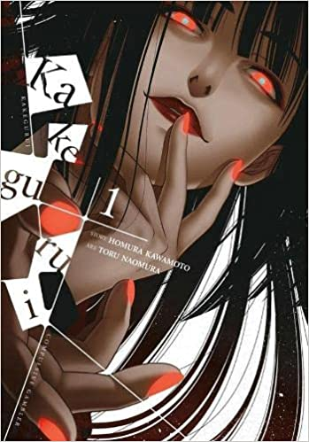

Kakegurui 1

Genere: Drama, escolar, misteri, suspens psicologic
Autor: Homura Kawamoto
Dibujante: Tōru Naomura
Kakegurui sigue a la famosa academia privada Hyakkaou, basada en un sistema de clases sociales.
El consejo estudiantil está en la cima de poder en la escuela, controlada por las apuestas.
Los estudiantes millonarios son los que gozan de más beneficios por sus habilidades e inteligencia,
sin embargo, el resto sufre problemas debido a su baja clase social y su falta de estrategia.
Una nueva estudiante llega a la escuela con una gran obsesión y destreza en los juegos de apuestas.
La chica llamada Yumeko está acompañada por Suzui en cada juego y a pesar de perder dinero,
incluso con las trampas de los otros oponentes, a Yumeko solo le guía el éxtasis y riesgo de apostar.